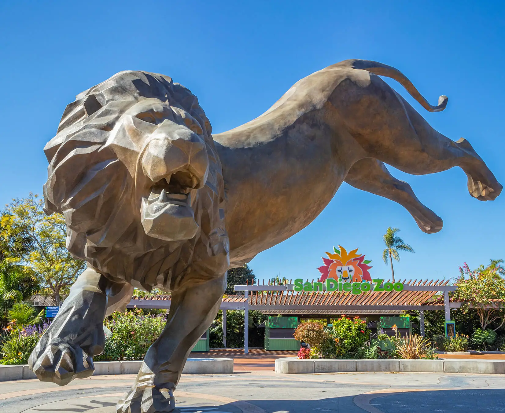

_
Objectives
- Provide a means of allowing zoo visitors to keep track of the exhibits that they want to see during their trip
- Generate optimized routes to take visitors through each of their selected exhibits in as little time as possible
- Create visual displays of the qualitative results on each page to summarize found identity
Primary User Interfaces
The following user interfaces, whose functions are outlined below, were constructed using Android Studio. While the implementation details of each cannot be expanded upon due to academic integrity concerns, both user interfaces rely on frontends composed primarily of HTML-like tags and CSS-like styling, as well as backends that utilize calls to a local database to store and retrieve user data, as well as those of the zoo's exhibits. The optimized directions found in the second figure below are generated according to a recursive, greedy graph traversal algorithm that charts every possible route between two exhibits and returns the one with the lowest weight.